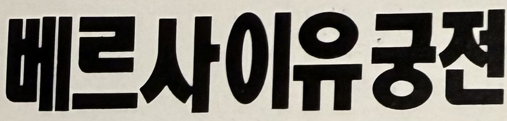
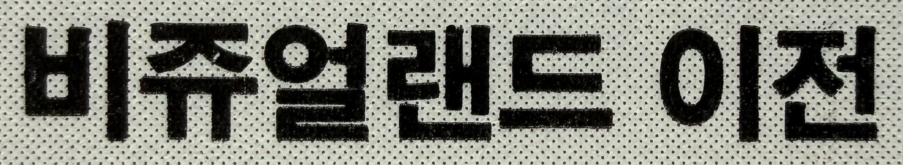
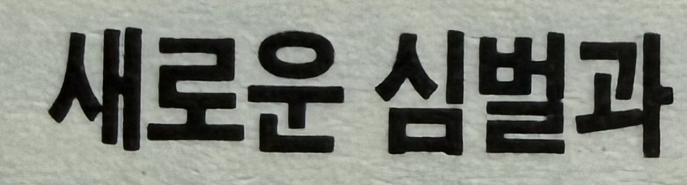
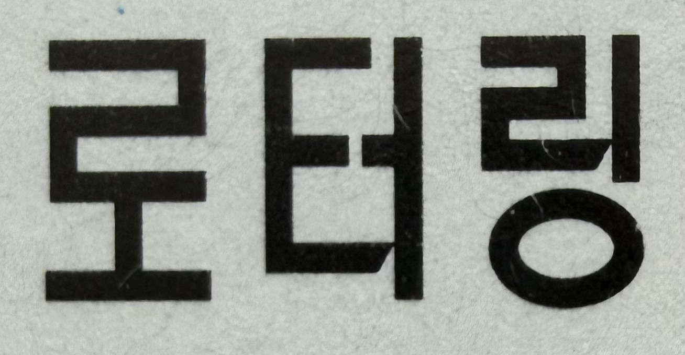
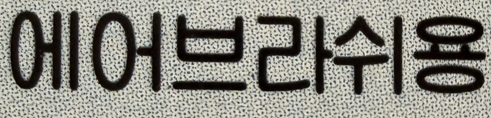
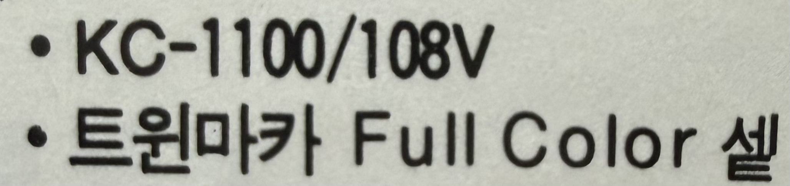
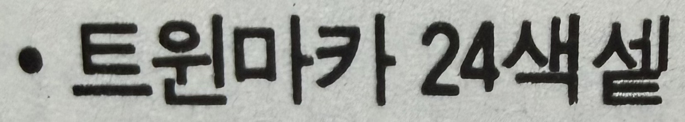
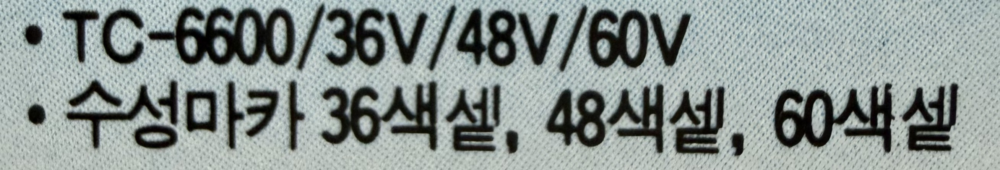

현재 표준 표기 : 베르사유 궁전(Palace of Versailles)
국어원 규칙상 어말의 [j] 발음은 앞의 ‘아' 모음과 합쳐져 '유'로 표기
‘-이유’ 형태는 일본식 음역 영향으로 남은 과거 표기
월간디자인 1992년 9월호 한양화학광고에서 발췌

현재 표준 표기 : 비주얼(visual)
'비쥬얼'은 일본식 음역 영향으로 남은 과거 관용 표기
월간디자인 1990년 9월호 27쪽에서 발췌

현재 표준 표기 : 심벌(symbol)
'심볼'로 많이 사용하지만 이는 발음식 관용 표기로 비표준어에 해당
외래어 표기법에서 /bə/ 계열을 ‘벌’로 적어 “심벌”로 정리,
실제 발음 감각 때문에 “심볼”이 더 널리 확산됨
월간디자인 1993년 7월호 152쪽에서 발췌

현재 표준 표기 : 레터링(lettering)
'로터링'은 독일의 문구 브랜드명인 '로트링(rotring)'에서
파생된 업계 관용 표현
월간디자인 1993년 7월호 골든시스템즈 광고에서 발췌

현재 표준 표기 : 에어브러시(airbrush)
'brush'의 'u'는 중앙의 '/ʌ/'' 모음으로, rʌ 부분이 ‘러’로 표기.
월간디자인 1993년 7월호 zig마카 광고에서 발췌

현재 표준 표기 : 세트(set)
모음 뒤 자음 't'를 '트'로 풀어 '세트'로 정리
월간디자인 1993년 7월호 zig마카 광고에서 발췌

받침으로 끝내는 '셑'은 한국어 음절 구조에 맞지 않는 비표준 표기
월간디자인 1993년 7월호 zig마카 광고에서 발췌

'세트'를 순우리말로 순화하면 '묶음'이 직관적
월간디자인 1993년 7월호 zig마카 광고에서 발췌